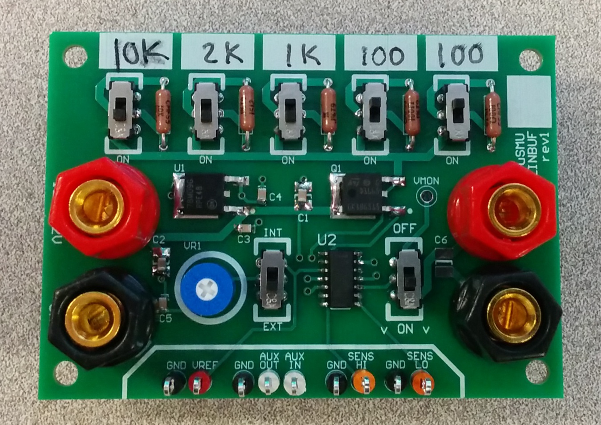

uSMU LINBUF User's Guide
github.com/anparks/usmu
The uSMU (micro- Source Measure Unit) tools are intended to allow current measurement with a high temporal resolution and high dynamic range.
The uSMU LINBUF tool is a simple implementation of the uSMU with decent dynamic range and good precision.

The uSMU LINBUF rev1 hardware
Theory of operation
The LINBUF tool places one of several high-precision resistors in the output current path of a linear voltage regulator. The voltage across the sense resistor is monitored and gives an indication of current through the load.
This tool is intended to be used in conjunction with an oscilloscope or other data acquisition device (DAQ) with either two channels or one differential input channel. The oscilloscope should monitor the difference between SENS HI and SENS LO voltages. The user should then divide this difference by the value of the selected sense resistor in order to find current through the load.
The input voltage for the LINBUF device must be between 12 and 32V, in order to meet the needs of the onboard 9V reference generator and to comply with the maximum voltage and power ratings of all components.

A functional diagram of the uSMU LINBUF rev1
Warnings
- The LINBUF has no current limiting or fault protection... Always use a current-limited power supply, and set the lowest possible limit
- Reversing the power supply polarity, even for a moment, may damage the uSMU or your load
- Do NOT change any other switch positions when the output enable switch is ON
Step-by-step: Using the uSMU LINBUF
1. Attach oscilloscope or DAQ to LINBUF sense output
Connect Ch1 of your oscilloscope or DAQ between SENS_HI and GND, and Ch2 between SENS_LO and GND.
NEVER attach one standard oscilloscope probe between SENS_HI and SENS_LO, or connect either SENS_HI or SENS_LO to the ground of your DAQ, as this will destroy the uSMU and/or your oscilloscope/DAQ. However, a differential probe or DAQ input may be connected across SENS_HI and SENS_LO.
2. Attach a power supply
MAKE SURE the output enable switch is in the OFF position before connecting a power supply. Set a 500mA or lower current limit on a 12-32V benchtop power supply and connect it between the GND and 12-32V inputs on the left side of the LINBUF board. Higher supply voltages will improve the dynamic range of LINBUF current measurement as detailed in the "Output current limits" section.
3. Select a sense resistor value
Higher sense resistor values give better current resolution, while lower sense resistor values give a higher peak current limit. Enable a sense resistor value by turning the corresponding switch to the "ON" position. If multiple resistors are enabled, they will be placed in parallel and so the parallel combination should be computed.
3. Set output voltage (reference voltage)
Now configure the voltage that will be supplied to the device you'd like to monitor. The LINBUF can either generate it's own adjustable reference voltage (0-8V) or be used with an external reference voltage supplied on the VREF pin.
To use the internal reference, set the reference selection switch to INT. Now connect a voltmeter to the VMON test point and use a screwdriver to rotate the wiper of the reference-adjust trimpot VR1 in order to set the desired voltage. Be certain your output enable is OFF during this adjustment, or that your load is not connected. Do not connect anything to the VREF pin when using an internally generated reference voltage.
To use the external reference, set the reference selection switch to EXT. Now connect your desired reference voltage source between the VREF and GND pins. The reference voltage may be from 0V to around 2V below the supply voltage you are using.
***Be sure to disconnect your voltmeter from VMON before moving to the next step. Current flowing to your voltmeter will cause an error in load current measurement.
4. Connect the LINBUF output to the load device
The output terminals OUT+ and GND may be connected to the supply rails of the device you'd like to monitor.
5. Connect the auxiliary buffer (optional)
The LINBUF provides an extra buffer for performing isolated voltage measurements of your device under test. The AUX_IN pin may be connected to any digital or analog node in your device under test, provided that node's voltage will not exceed the supply rail of the LINBUF. The AUX_OUT can then be connected to your oscilloscope.
6. Enable the output, and capture data
Switch the output enable switch to the ON position to supply your device under test.
Capture a trace on your oscilloscope or DAQ, and process it to compute load current.
The load current may be computed as (SENS_HI - SENS_LO) / (R_SENSE)
Output current limits
The maximum sourced current capability of the LINBUF is dependent on it's configuration. Factors to consider include:
- The supply voltage used
- The reference (output) voltage selected
- The sense resistor value and power rating
- The transistor switch power rating
Generally speaking, the following will be true:
|
Continuous current capability = sqrt((R_sense power rating) / (R_sense value))
|
Peak current limit* = (V_source - V_ref)/ (R_sense value)
*Peak current value is NOT sustainable due to component overheating
|
As an example, for a 100 Ohm 1/2 Watt sense resistor, a 32V source voltage, and a 2V output voltage, the LINBUF can source up to 70mA continuously and will limit peaks that are higher than around 300mA.
Precision and accuracy
The precision of the uSMU LINBUF will be dependent on the sense resistor used, and the resolution of the oscilloscope or data acquisition device used. The sense resistor value provides the current-to-voltage conversion gain. For example, a 1k Ohm sense resistor will generate a 1V output differential between SENS HI and SENS LO for every 1mA of current consumed by the load, meaning an oscilloscope with a 10mV resolution will resolve changes in load current as small as 10uA.
Assuming an accurate oscilloscope or DAQ, accuracy of the uSMU LINBUF is dependent on two factors:
- The additional current paths produced by buffer inputs
- The input offset voltages of the buffer amplifiers used to detect voltages at SENS HI and SENS LO
Generally speaking, the accuracy will be better than the minimal resolution of the measurement equipment.